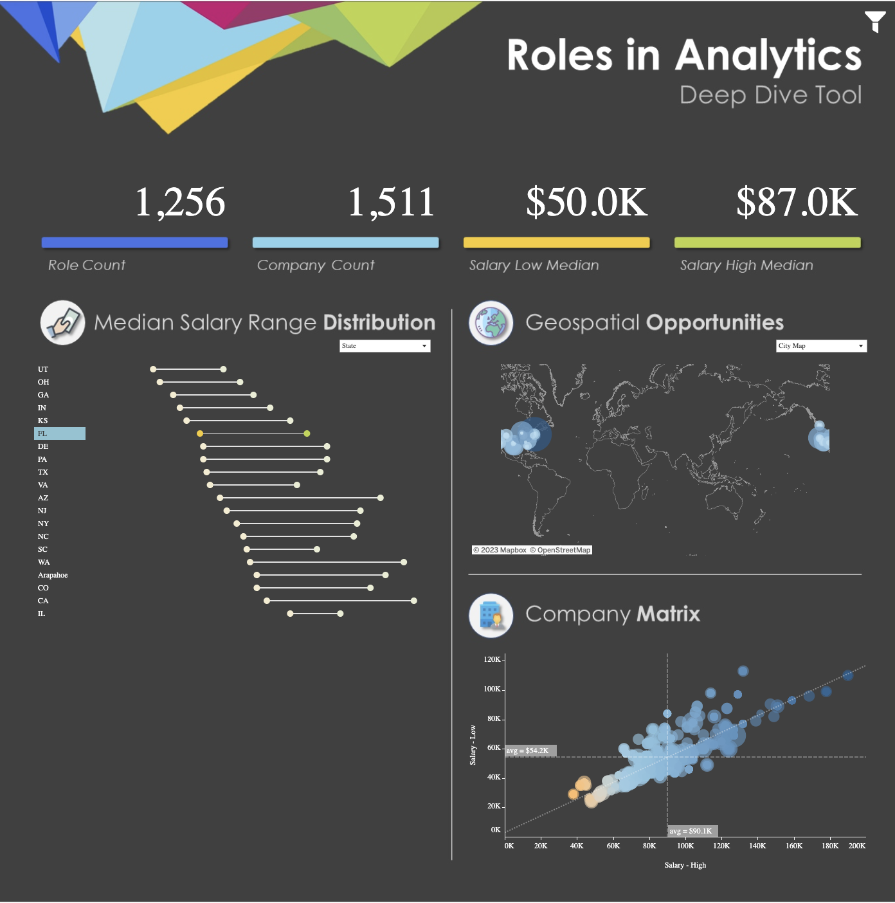

Data Visualisation
Browse below to see a list of my most recent and compelling
data visualisation projects.
Coffee Roaster BI Report
This visualisation details the performance of a chain coffee company in New York State.
This company requires a broad range of analytics regarding their daily operations as well as a deep
understanding of customer and competitor behaviour.
With a focus on prescriptive and predictive analytics, this visualisation is bolstered by the dynamic
geospatial analytics embedded in the homepage.
Alternative Vis Designed for Other Reasons
This visualisation details the performance of a chain coffee company in New York State.
This company requires a broad range of analytics regarding their daily operations as well as a deep
understanding of customer and competitor behaviour.
With a focus on prescriptive and predictive analytics, this visualisation is bolstered by the dynamic
geospatial analytics embedded in the homepage.

{% endblock %}